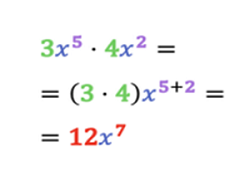
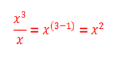
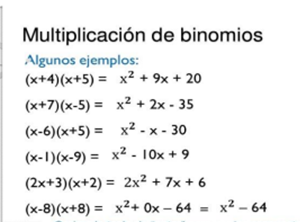
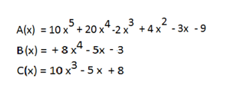
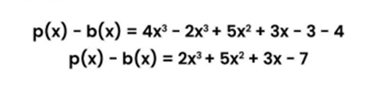

Monomio. Un Monomio es una expresión algebraica o un sólo
término algebraico que contiene; un sigo (+, -), un número llamado
coeficiente y una o varias literales conocidas también como variables,
incógnitas o letras, estas con sus respectivos exponentes.
Binomio. Un Binomio es una expresión algebraica formada por dos
términos o dos monomios, separados por el signo + o -
Polinomio; un Polinomio es una expresión algebraica formada por
cuatro o más términos o monomios, separados por el signo + o -
Monomio: Para sumar o restar monomios semejantes, se suman o se
restan los coeficientes y se deja la misma parte literal. Si los
monomios no son semejantes la suma o resta se deja indicada.
La multiplicación de monomios es otro monomio que tiene por
coeficiente el producto de los coeficientes y cuya parte literal se
obtiene multiplicando las potencias que tengan la misma base, es
decir, sumando los exponentes.
3 · (2x³ − 3x² + 4x − 2) = 6x³ − 9x² + 12x – 6
2(3x³ + 4x² + 2x − 1) = 6x³ + 8x² + 4x − 2
2a^5 * 3a^2 = 6a^7
Solo se pueden dividir monomios con la misma parte literal y con el grado del
dividendo mayor o igual que el grado de la variable correspondiente
del divisor.
La división de monomios es otro monomio que tiene por coeficiente el
cociente de los coeficientes y cuya parte literal se obtiene dividiendo las
potencias que tenga la misma base, es decir, restando los exponentes.


Binomio: Para sumar o restar binomios es necesario reunir los
términos semejantes y luego sumarlos o restarlos, respetando sus
signos y se conserva la parte literal tal como está.
• (10x3 + 4y) - (9x3
- 6y) = 10x3 + 4y - 9x3 + 6y = x3 +
10y
• x + 3)2 = (x + 3)(x + 3) = x2 + 6x + 9
Multiplicación: esta operación matemática cumple con las
propiedades distributiva, conmutativa y asociativa y regla de los
signos. Se realiza multiplicando cada término del primer factor por
cada término del segundo factor.
(4x + 5)(3 – 2x) =(4x*3)-(4x*2x)+(5*3)-(5*2x) = 12x – 8x2 + 15 –
10x = -8x2 + 2x + 15

División: para la división se toma en cuenta la regla de los signos
de la potenciación. Así, para los binomios se dividen los
coeficientes, y luego las variables según la ley de exponentes.
(4x2 + 8x) ÷ (x + 2) = 4x
Polinomio: Para saber cómo sumar polinomios es fundamental que las
variables y exponentes estén ordenados.
El primer paso consiste en ordenar los polinomios de mayor a menor.
Ahora se deberán agrupar los monomios con el mismo grado.
Finalmente, se procede a sumar los monomios semejantes. Otra forma de
sumar polinomios consiste en acomodar los términos de mayor a menor y
ubicarlos en columnas. Luego se realiza la suma.

Para restar polinomios se deberá sumar al minuendo el opuesto del
sustraendo. Primero se debe obtener el sustraendo de b(x). Esto se hará
resolviendo ese paréntesis. Se agrupan los términos semejantes. Se operan
elementos similares.

Se multiplica cada monomio del primer polinomio por todos los elementos
segundo polinomio. Se suman los monomios del mismo grado. Se obtiene
otro polinomio cuyo grado es la suma de los grados de los polinomios que se
multiplican.